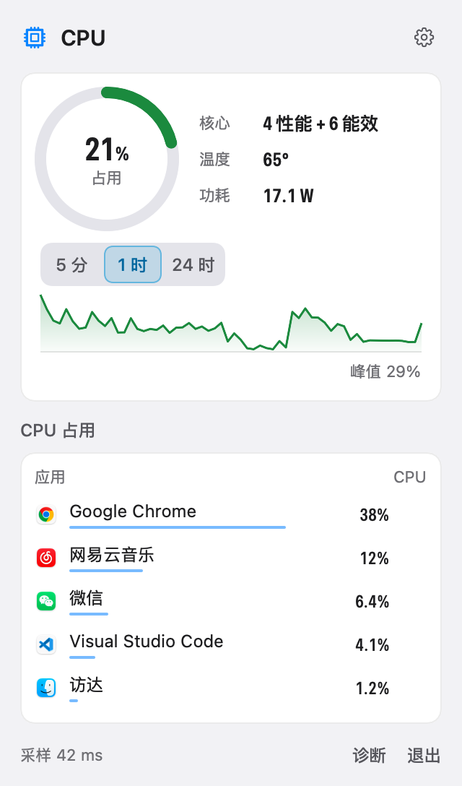

islet / 系统指标
Mac 菜单栏怎么显示 CPU、内存、网速和温度
用免费开源的 islet：它把 CPU、GPU、内存、磁盘、网速、温度、功耗和风扇转速收进菜单栏的一枚胶囊里，常看的数字一眼就能看到；点开任意一项，是带走势图和应用排行的详细面板。

能看到哪些数字
- CPU、GPU：占用率，性能核与能效核分开统计。
- 内存：已用内存、内存压力和交换。
- 网速：上传和下载，也可以只显示两者中较快的一方。
- 温度、功耗、风扇：CPU、GPU、硬盘等传感器的温度，整机功耗，风扇转速。
- 磁盘：读写速度、启动盘用量，NVMe 硬盘的 SMART 状态。
- 帧率（可选）：前台窗口所在屏幕每秒画面变化的次数。
在设置里用开关选择显示哪些指标，按住拖动调整顺序。偏高时数字变橙、很高时变红，面板里的圆环颜色相同。
点开是详细面板
每个指标都有带 5 分钟、1 小时、24 小时走势的详细面板；CPU、GPU、内存、磁盘、功耗和网速有应用排行，鼠标移上去可以直接结束程序。

- 网速：应用流量、今日和本月流量、公网 IP、Wi-Fi 信号和延迟。
- 功耗：整机功耗、电池健康度；「保持唤醒」让电脑不休眠。
- 风扇：发热来源排行；支持的机型可以按固定转速、温度曲线或规则调速。
怎么用
- 到 下载页 下载
islet.zip，解压后把 islet.app 拖进「应用程序」。 - 打开 islet，菜单栏里会出现一枚胶囊，默认显示常用指标。
- 点胶囊上的任意一项看详细面板；在设置的「灵动岛」页增减、排序指标。